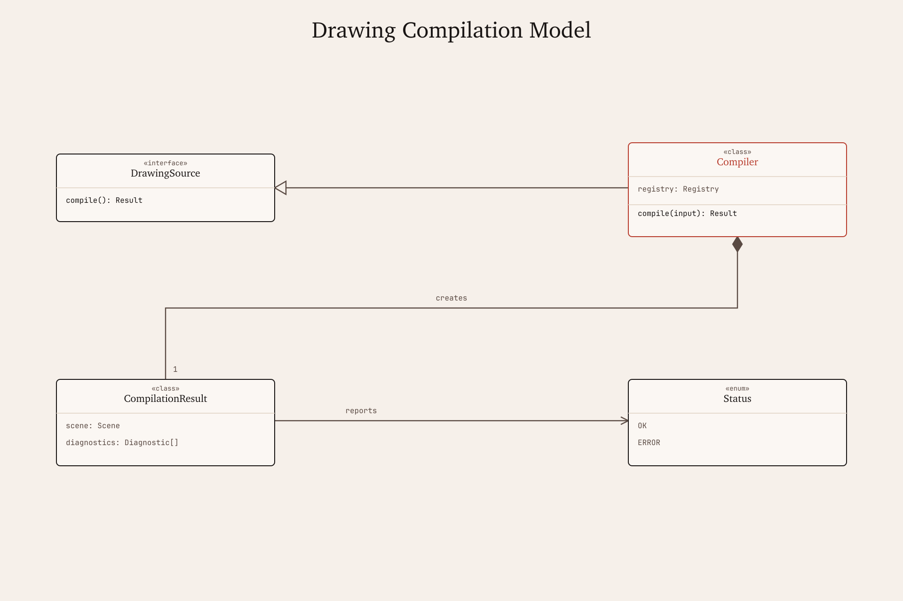

UML Class Demo
Agent Session Model

A standalone UML class artifact covering session ownership, runnable step interfaces, tool-call execution, retrieval memory, and enum-backed lifecycle state.
UML Class Demo

A standalone UML class artifact covering session ownership, runnable step interfaces, tool-call execution, retrieval memory, and enum-backed lifecycle state.